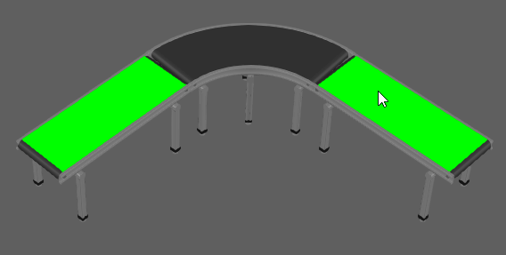

Создание уникального или общего компонента |
|
Компоненты в 3D-мире с одним и тем же VCID могут иметь одинаковые деревья элементов. Это отображается выбором элемента и имеет дополнительное преимущество с точки зрения памяти. Идентичность означает, что компоненты являются точными копиями друг друга. Как правило, это происходит при копировании и вставке или клонировании компонента.  Автоматический обменВы можете попытаться сделать так, чтобы компонент делился своими элементами с как можно большим количеством компонентов. 1.Нажмите на вкладке Моделирование 2.В трехмерном мире щелкните правой кнопкой мыши и выберите Инструменты, а затем нажмите Автоматический обмен. Это позволит оценить все компоненты в 3D-мире и попытаться поделиться ими как можно больше раз. 3.В трехмерном мире выберите элемент, чтобы убедиться, что он используется совместно с элементами в других компонентах. Сделать уникальнымКак правило, не рекомендуется переделывать компоненты с общими элементами. Прежде чем редактировать элементы компонента, сделайте его уникальным, иначе изменения в одном могут привести к изменениям в других 1.Выберите компонент или один из его элементов. 2.В трехмерном мире щелкните правой кнопкой мыши и выберите Инструменты, а затем нажмите Сделать компонент уникальным. |